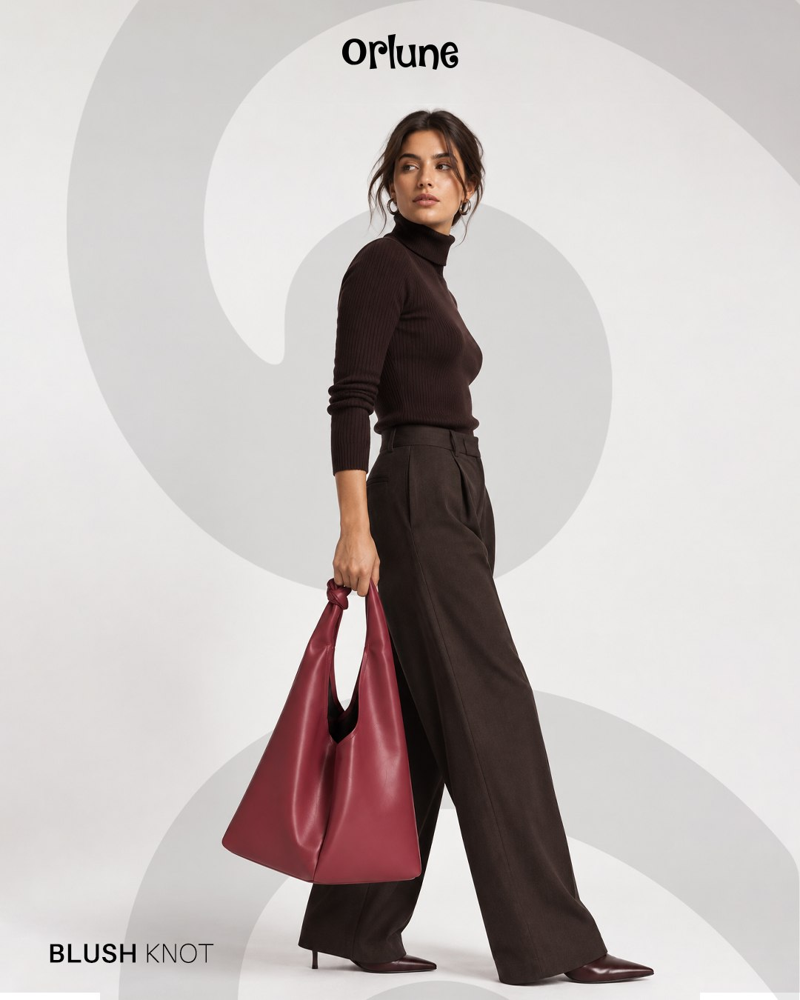

Social, by design.
Distinct brands. A considered presence in the feed.

A connected
visual world.
A selected collection of social media design for Orlune, Pass NetZero and Nazi Fert. Fashion-led compositions, research communication and product-focused design show how a visual identity can adapt to different audiences and messages.
Project scope
- Social media graphics
- Product-focused layouts
- Visual brand consistency
